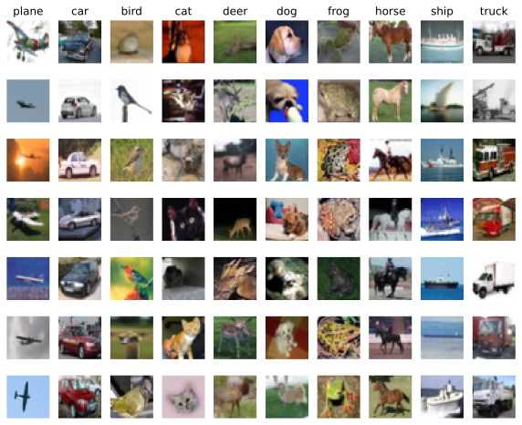
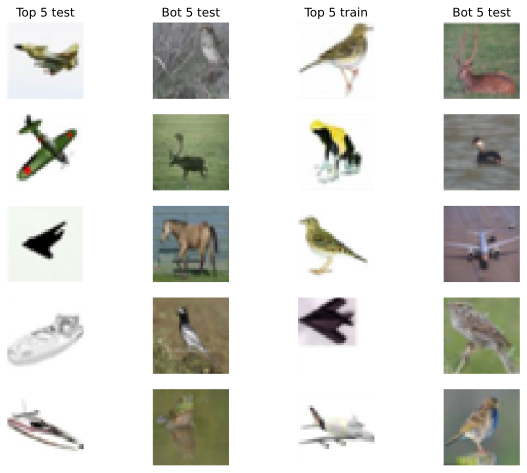
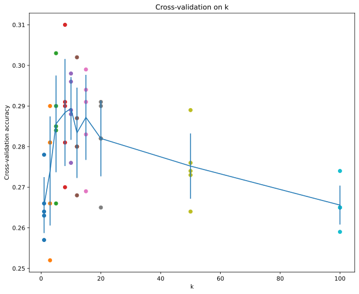

# Run some setup code for this notebook.
import random
import numpy as np
from cs231n.data_utils import load_CIFAR10
import matplotlib.pyplot as plt
from lovely_numpy import lo, configk-Nearest Neighbor (kNN) exercise
Complete and hand in this completed worksheet (including its outputs and any supporting code outside of the worksheet) with your assignment submission. For more details see the assignments page on the course website.
The kNN classifier consists of two stages:
- During training, the classifier takes the training data and simply remembers it
- During testing, kNN classifies every test image by comparing to all training images and transfering the labels of the k most similar training examples
- The value of k is cross-validated
In this exercise you will implement these steps and understand the basic Image Classification pipeline, cross-validation, and gain proficiency in writing efficient, vectorized code.
# This is a bit of magic to make matplotlib figures appear inline in the notebook
# rather than in a new window.
plt.rcParams['figure.figsize'] = (10.0, 8.0) # set default size of plots
plt.rcParams['image.interpolation'] = 'nearest'
plt.rcParams['image.cmap'] = 'gray'
# Some more magic so that the notebook will reload external python modules;
# see http://stackoverflow.com/questions/1907993/autoreload-of-modules-in-ipython# Load the raw CIFAR-10 data.
cifar10_dir = 'cs231n/datasets/cifar-10-batches-py'
# Cleaning up variables to prevent loading data multiple times (which may cause memory issue)
# try:
# del X_train, y_train
# del X_test, y_test
# print('Clear previously loaded data.')
# except:
# pass
X_train, y_train, X_test, y_test = load_CIFAR10(cifar10_dir)
# As a sanity check, we print out the size of the training and test data.
print('Training data shape: ', lo(X_train))
print('Training labels shape: ', lo(y_train))
print('Test data shape: ', lo(X_test))
print('Test labels shape: ', lo(y_test))Training data shape: array[50000, 32, 32, 3] n=153600000 x∈[0., 255.000] μ=120.708 σ=64.150
Training labels shape: array[50000] i64 x∈[0, 9] μ=4.500 σ=2.872
Test data shape: array[10000, 32, 32, 3] n=30720000 x∈[0., 255.000] μ=121.529 σ=64.061
Test labels shape: array[10000] i64 x∈[0, 9] μ=4.500 σ=2.872# Visualize some examples from the dataset.
# We show a few examples of training images from each class.
classes = ['plane', 'car', 'bird', 'cat', 'deer', 'dog', 'frog', 'horse', 'ship', 'truck']
num_classes = len(classes)
samples_per_class = 7
for y, cls in enumerate(classes):
idxs = np.flatnonzero(y_train == y)
idxs = np.random.choice(idxs, samples_per_class, replace=False)
for i, idx in enumerate(idxs):
plt_idx = i * num_classes + y + 1
plt.subplot(samples_per_class, num_classes, plt_idx)
plt.imshow(X_train[idx].astype('uint8'))
plt.axis('off')
if i == 0:
plt.title(cls)
plt.show()
# Subsample the data for more efficient code execution in this exercise
num_training = 5000
mask = list(range(num_training))
X_train = X_train[mask]
y_train = y_train[mask]
num_test = 500
mask = list(range(num_test))
X_test = X_test[mask]
y_test = y_test[mask]
# Reshape the image data into rows
X_train = np.reshape(X_train, (X_train.shape[0], -1))
X_test = np.reshape(X_test, (X_test.shape[0], -1))
print(f"{lo(X_train)=}")
print(f" {lo(X_test)=}")lo(X_train)=array[5000, 3072] n=15360000 x∈[0., 255.000] μ=120.457 σ=64.399
lo(X_test)=array[500, 3072] n=1536000 x∈[0., 255.000] μ=123.493 σ=64.826from lib.knn_impl import KNearestNeighbor# from cs231n.classifiers import KNearestNeighbor
# Create a kNN classifier instance.
# Remember that training a kNN classifier is a noop:
# the Classifier simply remembers the data and does no further processing
classifier = KNearestNeighbor()
classifier.train(X_train, y_train)We would now like to classify the test data with the kNN classifier. Recall that we can break down this process into two steps:
- First we must compute the distances between all test examples and all train examples.
- Given these distances, for each test example we find the k nearest examples and have them vote for the label
Lets begin with computing the distance matrix between all training and test examples. For example, if there are Ntr training examples and Nte test examples, this stage should result in a Nte x Ntr matrix where each element (i,j) is the distance between the i-th test and j-th train example.
Note: For the three distance computations that we require you to implement in this notebook, you may not use the np.linalg.norm() function that numpy provides.
First, open cs231n/classifiers/k_nearest_neighbor.py and implement the function compute_distances_two_loops that uses a (very inefficient) double loop over all pairs of (test, train) examples and computes the distance matrix one element at a time.
# Open cs231n/classifiers/k_nearest_neighbor.py and implement
# compute_distances_two_loops.
# Test your implementation:
dists = classifier.compute_distances_two_loops(X_test)
print(lo(dists))array[500, 5000] n=2500000 x∈[1.066e+03, 1.231e+04] μ=4.861e+03 σ=1.173e+03# We can visualize the distance matrix: each row is a single test example and
# its distances to training examples
plt.imshow(dists, interpolation='none')
plt.show()
Inline Question 1
Notice the structured patterns in the distance matrix, where some rows or columns are visibly brighter. (Note that with the default color scheme black indicates low distances while white indicates high distances.)
- What in the data is the cause behind the distinctly bright rows?
- What causes the columns?
\(\color{blue}{\textit Your Answer:}\) fill this in.
In both cases (test, train), the dark stripes correspond to examples that have “mild” pixel intensities, and the bright ones have pixels with either very high or very low intensities.
Let’s test this idea:
test_intensities = np.argsort(dists.sum(axis=1))
test_top_5 = test_intensities[-5:]
test_bot_5 = test_intensities[:5]
train_intensities = np.argsort(dists.sum(axis=0))
train_top_5 = train_intensities[-5:]
train_bot_5 = train_intensities[:5]
for i in range(5):
plt.subplot(5,4, 4*i + 1)
plt.imshow(X_test[test_top_5[i]].reshape(32,32,3).astype("uint8"))
plt.axis(False)
if not i:
plt.title("Top 5 test")
plt.subplot(5,4, 4*i+2)
plt.imshow(X_test[test_bot_5[i]].reshape(32,32,3).astype("uint8"))
plt.axis(False)
if not i:
plt.title("Bot 5 test")
plt.subplot(5,4, 4*i + 3)
plt.imshow(X_train[train_top_5[i]].reshape(32,32,3).astype("uint8"))
plt.axis(False)
if not i:
plt.title("Top 5 train")
plt.subplot(5,4, 4*i+4)
plt.imshow(X_train[train_bot_5[i]].reshape(32,32,3).astype("uint8"))
plt.axis(False)
if not i:
plt.title("Bot 5 test")
Looks like I was correct
# Now implement the function predict_labels and run the code below:
# We use k = 1 (which is Nearest Neighbor).
y_test_pred = classifier.predict_labels(dists, k=1)
# Compute and print the fraction of correctly predicted examples
num_correct = np.sum(y_test_pred == y_test)
accuracy = float(num_correct) / num_test
print('Got %d / %d correct => accuracy: %f' % (num_correct, num_test, accuracy))Got 137 / 500 correct => accuracy: 0.274000You should expect to see approximately 27% accuracy. Now lets try out a larger k, say k = 5:
y_test_pred = classifier.predict_labels(dists, k=5)
num_correct = np.sum(y_test_pred == y_test)
accuracy = float(num_correct) / num_test
print('Got %d / %d correct => accuracy: %f' % (num_correct, num_test, accuracy))Got 143 / 500 correct => accuracy: 0.286000You should expect to see a slightly better performance than with k = 1.
Inline Question 2
We can also use other distance metrics such as L1 distance. For pixel values \(p_{ij}^{(k)}\) at location \((i,j)\) of some image \(I_k\),
the mean \(\mu\) across all pixels over all images is \[\mu=\frac{1}{nhw}\sum_{k=1}^n\sum_{i=1}^{h}\sum_{j=1}^{w}p_{ij}^{(k)}\] And the pixel-wise mean \(\mu_{ij}\) across all images is \[\mu_{ij}=\frac{1}{n}\sum_{k=1}^np_{ij}^{(k)}.\] The general standard deviation \(\sigma\) and pixel-wise standard deviation \(\sigma_{ij}\) is defined similarly.
Which of the following preprocessing steps will not change the performance of a Nearest Neighbor classifier that uses L1 distance? Select all that apply. 1. Subtracting the mean \(\mu\) (\(\tilde{p}_{ij}^{(k)}=p_{ij}^{(k)}-\mu\).) 2. Subtracting the per pixel mean \(\mu_{ij}\) (\(\tilde{p}_{ij}^{(k)}=p_{ij}^{(k)}-\mu_{ij}\).) 3. Subtracting the mean \(\mu\) and dividing by the standard deviation \(\sigma\). 4. Subtracting the pixel-wise mean \(\mu_{ij}\) and dividing by the pixel-wise standard deviation \(\sigma_{ij}\). 5. Rotating the coordinate axes of the data.
\(\color{blue}{\textit Your Answer:}\) 1. [v] Substracting mean will not change the difference matrix, as the mean will be substracted from both sides when calculating per-pixel difference.
[v] Substracting per-pixel mean also does not change the difference matrix, as for each pixel pair, the same mean values will be substracted from both sides.
[v] Substracting mean and dividing by std will result in a difference matrix (that is scaled down by 1/std), but since all distances will be scaled by the same amount, the predicted labels will remain the same.
The predicitons will change. After dividing each pixel by pixel-wise std, the influence this particular pixel has on the prediciton will be scaled down by 1/std.
What do you mean by “Rotating the coordinate axes of the data.”? Swap h and w? This will not affect the result.
\(\color{blue}{\textit Your Explanation:}\)
# Now lets speed up distance matrix computation by using partial vectorization
# with one loop. Implement the function compute_distances_one_loop and run the
# code below:
dists_one = classifier.compute_distances_one_loop(X_test)
# To ensure that our vectorized implementation is correct, we make sure that it
# agrees with the naive implementation. There are many ways to decide whether
# two matrices are similar; one of the simplest is the Frobenius norm. In case
# you haven't seen it before, the Frobenius norm of two matrices is the square
# root of the squared sum of differences of all elements; in other words, reshape
# the matrices into vectors and compute the Euclidean distance between them.
difference = np.linalg.norm(dists - dists_one, ord='fro')
print('One loop difference was: %f' % (difference, ))
if difference < 0.001:
print('Good! The distance matrices are the same')
else:
print('Uh-oh! The distance matrices are different')One loop difference was: 0.000000
Good! The distance matrices are the same# Now implement the fully vectorized version inside compute_distances_no_loops
# and run the code
dists_two = classifier.compute_distances_no_loops(X_test)
# (x-y)^2 = x^2 + y^2 - 2xy
# dists_two = np.sqrt(((X_test[:,None,:] - classifier.X_train)**2).sum(axis=-1))
# check that the distance matrix agrees with the one we computed before:
difference = np.linalg.norm(dists - dists_two, ord='fro')
print('No loop difference was: %f' % (difference, ))
if difference < 0.001:
print('Good! The distance matrices are the same')
else:
print('Uh-oh! The distance matrices are different')No loop difference was: 0.000000
Good! The distance matrices are the same# Let's compare how fast the implementations are
def time_function(f, *args):
"""
Call a function f with args and return the time (in seconds) that it took to execute.
"""
import time
tic = time.time()
f(*args)
toc = time.time()
return toc - tic
two_loop_time = time_function(classifier.compute_distances_two_loops, X_test)
print('Two loop version took %f seconds' % two_loop_time)
one_loop_time = time_function(classifier.compute_distances_one_loop, X_test)
print('One loop version took %f seconds' % one_loop_time)
no_loop_time = time_function(classifier.compute_distances_no_loops, X_test)
print('No loop version took %f seconds' % no_loop_time)
# You should see significantly faster performance with the fully vectorized implementation!
# NOTE: depending on what machine you're using,
# you might not see a speedup when you go from two loops to one loop,
# and might even see a slow-down.Two loop version took 16.607513 seconds
One loop version took 16.501603 seconds
No loop version took 0.089059 secondsCross-validation
We have implemented the k-Nearest Neighbor classifier but we set the value k = 5 arbitrarily. We will now determine the best value of this hyperparameter with cross-validation.
a = [1,2,3,4,5]
n = 2
a[:n] + a[n+1:][1, 2, 4, 5]num_folds = 5
k_choices = [1, 3, 5, 8, 10, 12, 15, 20, 50, 100]
X_train_folds = []
y_train_folds = []
################################################################################
# TODO: #
# Split up the training data into folds. After splitting, X_train_folds and #
# y_train_folds should each be lists of length num_folds, where #
# y_train_folds[i] is the label vector for the points in X_train_folds[i]. #
# Hint: Look up the numpy array_split function. #
################################################################################
# *****START OF YOUR CODE (DO NOT DELETE/MODIFY THIS LINE)*****
X_train_folds = np.array_split(X_train, num_folds)
y_train_folds = np.array_split(y_train, num_folds)
# *****END OF YOUR CODE (DO NOT DELETE/MODIFY THIS LINE)*****
# A dictionary holding the accuracies for different values of k that we find
# when running cross-validation. After running cross-validation,
# k_to_accuracies[k] should be a list of length num_folds giving the different
# accuracy values that we found when using that value of k.
k_to_accuracies = {}
################################################################################
# TODO: #
# Perform k-fold cross validation to find the best value of k. For each #
# possible value of k, run the k-nearest-neighbor algorithm num_folds times, #
# where in each case you use all but one of the folds as training data and the #
# last fold as a validation set. Store the accuracies for all fold and all #
# values of k in the k_to_accuracies dictionary. #
################################################################################
# *****START OF YOUR CODE (DO NOT DELETE/MODIFY THIS LINE)*****
for k in k_choices:
k_to_accuracies[k] = []
for fold in range(num_folds):
classifier.train(np.concatenate(X_train_folds[:fold] + X_train_folds[fold+1:]),
np.concatenate(y_train_folds[:fold] + y_train_folds[fold+1:]))
for k in k_choices:
preds = classifier.predict(X_train_folds[fold], k=k)
accuracy = np.sum(preds == y_train_folds[fold]).astype(float) / len(y_train_folds[fold])
k_to_accuracies[k].append(accuracy)
# *****END OF YOUR CODE (DO NOT DELETE/MODIFY THIS LINE)*****
# Print out the computed accuracies
for k in sorted(k_to_accuracies):
mean = sum(k_to_accuracies[k]) / len(k_to_accuracies[k])
print(f'k = {k}, accuracy = {mean:.4f} : {k_to_accuracies[k]}')k = 1, accuracy = 0.2656 : [0.263, 0.257, 0.264, 0.278, 0.266]
k = 3, accuracy = 0.2740 : [0.252, 0.281, 0.266, 0.29, 0.281]
k = 5, accuracy = 0.2856 : [0.266, 0.285, 0.29, 0.303, 0.284]
k = 8, accuracy = 0.2884 : [0.27, 0.31, 0.281, 0.29, 0.291]
k = 10, accuracy = 0.2894 : [0.276, 0.298, 0.296, 0.289, 0.288]
k = 12, accuracy = 0.2834 : [0.268, 0.302, 0.287, 0.28, 0.28]
k = 15, accuracy = 0.2872 : [0.269, 0.299, 0.294, 0.291, 0.283]
k = 20, accuracy = 0.2820 : [0.265, 0.291, 0.29, 0.282, 0.282]
k = 50, accuracy = 0.2752 : [0.274, 0.289, 0.276, 0.264, 0.273]
k = 100, accuracy = 0.2656 : [0.265, 0.274, 0.265, 0.259, 0.265]# plot the raw observations
for k in k_choices:
accuracies = k_to_accuracies[k]
plt.scatter([k] * len(accuracies), accuracies)
# plot the trend line with error bars that correspond to standard deviation
accuracies_mean = np.array([np.mean(v) for k,v in sorted(k_to_accuracies.items())])
accuracies_std = np.array([np.std(v) for k,v in sorted(k_to_accuracies.items())])
plt.errorbar(k_choices, accuracies_mean, yerr=accuracies_std)
plt.title('Cross-validation on k')
plt.xlabel('k')
plt.ylabel('Cross-validation accuracy')
plt.show()
# Based on the cross-validation results above, choose the best value for k,
# retrain the classifier using all the training data, and test it on the test
# data. You should be able to get above 28% accuracy on the test data.
best_k = 5
classifier = KNearestNeighbor()
classifier.train(X_train, y_train)
y_test_pred = classifier.predict(X_test, k=best_k)
# Compute and display the accuracy
num_correct = np.sum(y_test_pred == y_test)
accuracy = float(num_correct) / num_test
print('Got %d / %d correct => accuracy: %f' % (num_correct, num_test, accuracy))Got 143 / 500 correct => accuracy: 0.286000Inline Question 3
Which of the following statements about \(k\)-Nearest Neighbor (\(k\)-NN) are true in a classification setting, and for all \(k\)? Select all that apply.
- The decision boundary of the k-NN classifier is linear.
- The training error of a 1-NN will always be lower than or equal to that of 5-NN.
- The test error of a 1-NN will always be lower than that of a 5-NN.
- The time needed to classify a test example with the k-NN classifier grows with the size of the training set.
- None of the above.
\(\color{blue}{\textit Your Answer:}\)
- No, it’s not linear
- Yes, for 1-NN the training erro will always be 0. For 5-NN examples that are overall closed to other class pixel-wise will have the wrong clas.
- In practical terms, the test error will the lower for 5-NN, but it’s theoretically possible (although in practice inplausible) to have a test set that has outliers similar to the training set, and 1-NN might perform better on it.
- Yes, as you need to calculate the distance between each test and training example.
\(\color{blue}{\textit Your Explanation:}\)